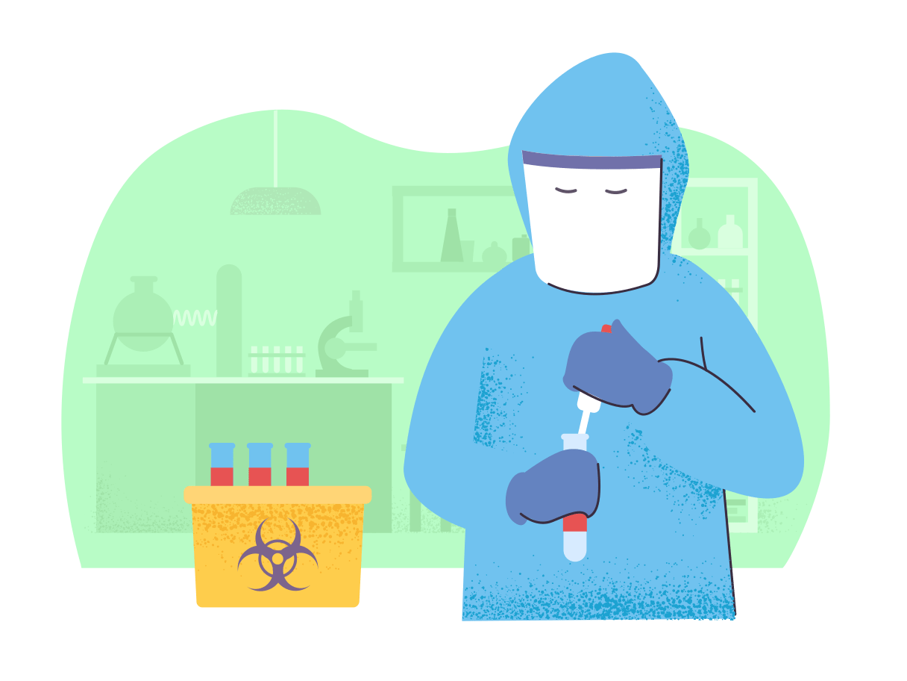

Welcome
CAP 2.0 Simulation
Δ DELTA SIMULATION
Simulating the "Change In" the COVID-19 Phases
The Delta simulation aims to compare different preventative measures taken during the COVID-19 pandemic, in the United States. Through case-randomization we can effectively demonstrate how efficient each course of action is in flattening the curve of the number of cases. Scroll down to begin!
How it Works
At the start of each simulation, 1-2 individuals are infected. Take a look at how the illness spreads from person to person and how each additional layer of prevention decreases the number of cases in the same amount of time down below.
The graph you see in white on your screen demonstrates all four cases' compiled graphs of the increase in the number of cases (Without Preventative Measures, Social Distancing and Lockdown, Wearing Masks, and Vaccination), whereas there are corresponding simulation graphs of the number of cases for each simulation as you scroll.
Each colored circle in the simulation represents a single person and their "state" at that point in time. Individuals can either represent being healthy, sick, recovered, vaccinated, or deceased and their speeds, number of interactions, etc. all impact their chances of contracting COVID-19.
Without Preventative Measures
As demonstrated in this simulation, without any preventative measures, one or two COVID-19 infections can lead to the majority of a population contracting the virus. The number of cases increase exponentially and peak in a short amount of time. This renders the population without much control over their next course of action. Hence, it is important that all citizens take at least the bare-minimum precautionary measures to avoid such drastic transmission rates.
The current strain of SARS-CoV-2 has an average mortality rate of 1.7%, in the United States, according to a study by the John Hopkins Coronavirus Resource Center and has already been the reason of death for hundreds of thousands of people. This deadly virus cannot be defeated without a united population.
Social Distancing and Lockdown
Next, there are less people moving and interacting with each other in this simulation, as demonstated by the slower speeds and fixed dot positions. Staying home and being in contact only with immediate family members can decrease peak amounts of cases and safeguard your loved ones. The graph is compressed and peaks later in the simulation.
It is recommended by the Center for Disease Control and Prevention that people isolate themselves for 14 days after inter-state travel and larger social gatherings, during a "quarantine" period. Being in a lockdown phase is when all non-essential gatherings and businesses are shut down to allow for even less chances of disease spread.
Wearing Masks
Next, there are less people moving and interacting with each other in this simulation, as demonstated by the slower speeds and fixed dot positions. Staying home and being in contact only with immediate family members can decrease peak amounts of cases and safeguard your loved ones. The graph is once again compressed and peaks later in the simulation.
It is recommended by the Center for Disease Control and Prevention that people isolate themselves for 14 days after inter-state travel and larger social gatherings, during a "quarantine" period. Being in a lockdown phase is when all non-essential gatherings and businesses are shut down to allow for even less chances of disease spread.
Vaccination
Here, we can see people gaining immunity through vaccination. Although providing vaccines to every member of the population is unrealistic, herd immunity is a form of indirect protection that reduces the probability of infection due to more people in the community being immune. This significantly decreases the chance that the person you are interacting with is Coronavirus-susceptible.
As demonstrated in the graph, the curve is flattened much quicker and does not peak as high. This is the current stage of pandemic control the United States is in. The vaccination phase is split into multiple sub-phases that allow for prioritization of community members to get vaccinated. Healthcare workers and senior citizens are the most susceptible, so they are first in line for vaccines. In order to learn more about scheduling your first vaccine dose, visit our Resources page.
Conclusion
Now, compare all the case graphs. Each simulation allows for better control over the increase in the number of cases during the COVID-19 pandemic. However, each of these dots represent living people and the loss of even one is not something to be taken lightly. We urge you to follow all Center for Disease Control and Prevention guidelines and join the CAP 2.0 team in doing our part to flatten the curve and keep our community safe. This fight can only be won with everyone's cooperation.
How it Works
At the start of each simulation, 1-2 individuals are infected. Take a look at how the illness spreads from person to person and how each additional layer of prevention decreases the number of cases in the same amount of time down below.
The graph you see in white on your screen demonstrates all four cases' compiled graphs of the increase in the number of cases (Without Preventative Measures, Social Distancing and Lockdown, Wearing Masks, and Vaccination), whereas there are corresponding simulation graphs of the number of cases for each simulation as you scroll.
Each colored circle in the simulation represents a single person and their "state" at that point in time. Individuals can either represent being healthy, sick, recovered, vaccinated, or deceased and their speeds, number of interactions, etc. all impact their chances of contracting COVID-19.
Without Preventative Measures
As demonstrated in this simulation, without any preventative measures, one or two COVID-19 infections can lead to the majority of a population contracting the virus. The number of cases increase exponentially and peak in a short amount of time. This renders the population without much control over their next course of action. Hence, it is important that all citizens take at least the bare-minimum precautionary measures to avoid such drastic transmission rates.
The current strain of SARS-CoV-2 has an average mortality rate of 1.7%, in the United States, according to a study by the John Hopkins Coronavirus Resource Center and has already been the reason of death for hundreds of thousands of people. This deadly virus cannot be defeated without a united population.
Social Distancing and Lockdown
Next, there are less people moving and interacting with each other in this simulation, as demonstated by the slower speeds and fixed dot positions. Staying home and being in contact only with immediate family members can decrease peak amounts of cases and safeguard your loved ones. The graph is once again compressed and peaks later in the simulation.
It is recommended by the Center for Disease Control and Prevention that people isolate themselves for 14 days after inter-state travel and larger social gatherings, during a "quarantine" period. Being in a lockdown phase is when all non-essential gatherings and businesses are shut down to allow for even less chances of disease spread.
Wearing Masks
In this simulation, the people are moving at a slower rate and the infection rate is less, demonstrating that even if someone was to come in contact with an infected person, there is a slight chance that they will not contract COVID-19 due to the use of masks, gloves, and hand sanitizers. The graph takes more time to escalate and peaks at a much lower level.
The use of a mask can lower transmission rates by at least 70%. As shown in the graph, it takes longer for the number of cases to spike, further disproving recent claims about the ineffectiveness of facial coverings.
Vaccination
Here, we can see people gaining immunity through vaccination. Although providing vaccines to every member of the population is unrealistic, herd immunity is a form of indirect protection that reduces the probability of infection due to more people in the community being immune. This significantly decreases the chance that the person you are interacting with is Coronavirus-susceptible.
As demonstrated in the graph, the curve is flattened much quicker and does not peak as high. This is the current stage of pandemic control the United States is in. The vaccination phase is split into multiple sub-phases that allow for prioritization of community members to get vaccinated. Healthcare workers and senior citizens are the most susceptible, so they are first in line for vaccines. In order to learn more about scheduling your first vaccine dose, visit our Resources page.
Conclusion
Now, compare all the case graphs. Each simulation allows for better control over the increase in the number of cases during the COVID-19 pandemic. However, each of these dots represent living people and the loss of even one is not something to be taken lightly. We urge you to follow all Center for Disease Control and Prevention guidelines and join the CAP 2.0 team in doing your part to flatten the curve and keep our community safe. This fight can only be won with everyone's cooperation.